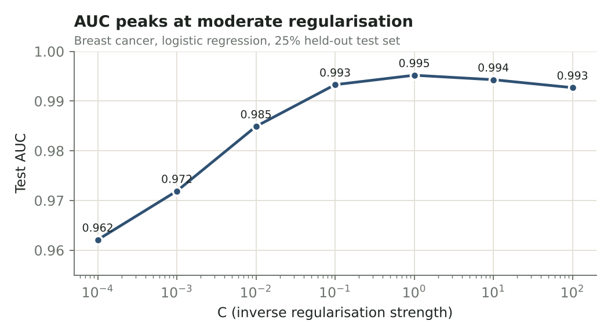
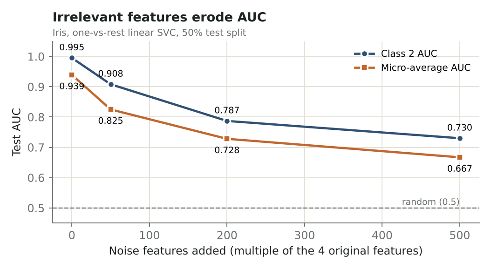
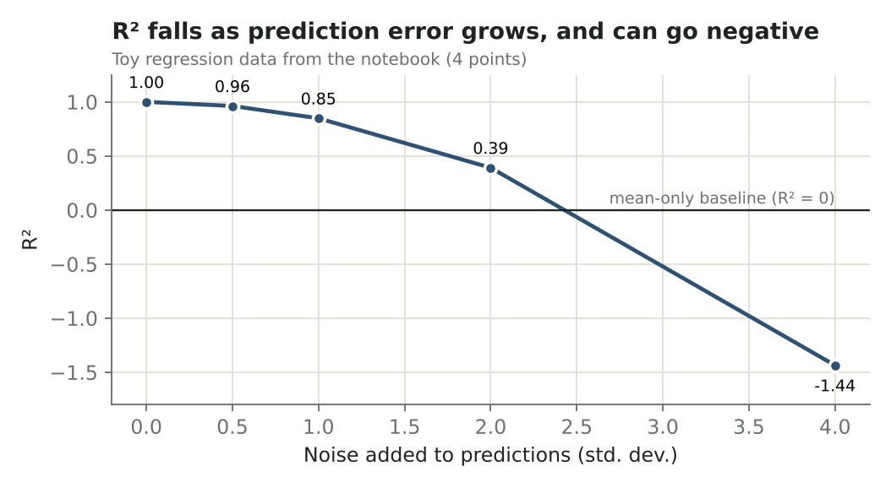
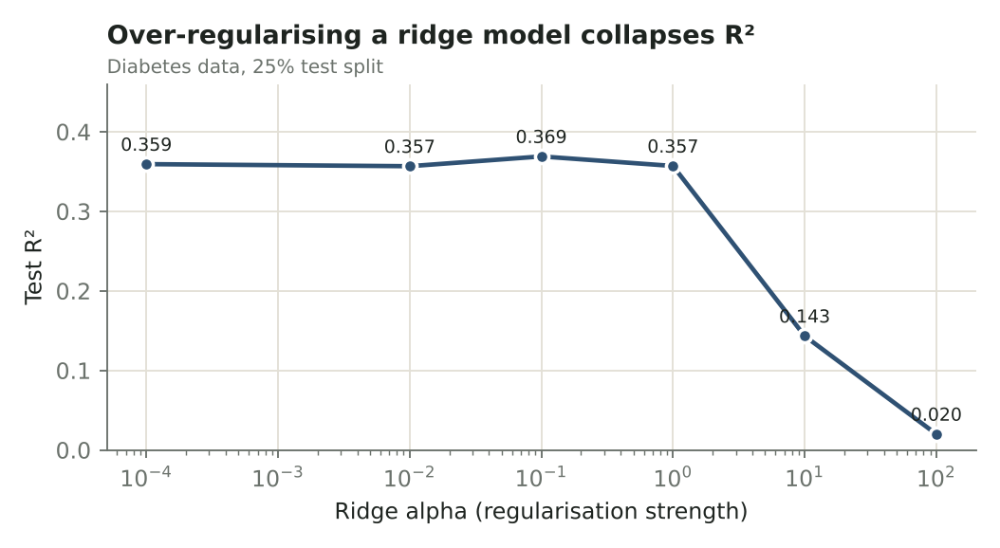
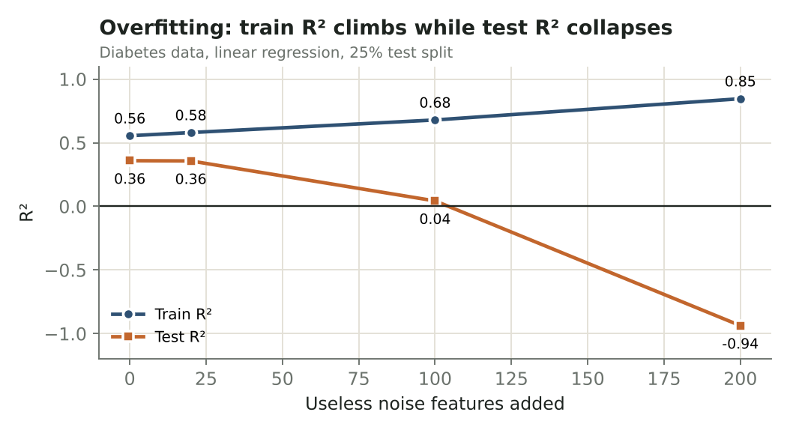

Unit 11 — Model Selection & Evaluation
Model Performance Measurement — effect of parameters on AUC and R²: re-running the unit's scikit-learn notebook while changing individual parameters, to see how AUC and R² actually respond rather than just reading what they should do.
Aim
I ran the Unit 11 notebook (scikit-learn) and changed key parameters to see how they affect AUC (classification) and R² (regression). All results are on held-out test data unless stated. One small fix was needed: the notebook's multiclass Iris cell fails on current scikit-learn because liblinear no longer supports multiclass, so I wrapped it in OneVsRestClassifier (same one-vs-rest scheme).
Baseline (notebook defaults)
| Measure | Value |
|---|---|
| Breast cancer AUC (logistic regression) | 0.995 |
| Iris one-vs-rest AUC | 0.991 |
| Toy regression R² (MSE 0.375, MAE 0.5) | 0.949 |
AUC results
- Regularisation (breast cancer, logistic regression, scaled): AUC rose from 0.962 at C=0.0001 to a peak of 0.995 at C=1, then eased slightly to 0.993 at C=100. Too much regularisation underfits; too little starts to overfit.

- Noisy features (Iris, linear SVC, class 2): AUC fell from 0.995 with no noise, to 0.908 (×50), 0.787 (×200, the notebook setting) and 0.730 (×500). Irrelevant features badly weaken ranking ability, especially with few samples.

- Kernel and C on the noisy data: changing C made no difference for the linear kernel (0.787); RBF was worse (0.744–0.757). Fixing the features mattered more than tuning the model.
- Training vs. test (breast cancer): train AUC 0.995 vs. test AUC 0.993, so the notebook's train-on-same-data score is only slightly optimistic here.
R² results
- Prediction error (toy data): R² fell from 1.00 (perfect) to 0.96, 0.85 and 0.39 as noise grew, and to −1.44 at the largest noise. A negative R² means the model is worse than simply predicting the mean (which scores 0).

- Ridge alpha (diabetes): test R² stayed around 0.36–0.37 for alpha up to 1, then dropped to 0.14 (alpha=10) and 0.02 (alpha=100) as the model became over-regularised.

- Test split size: test R² changed from 0.36 to 0.44 as the test share grew from 10% to 80%, while train R² rose from 0.53 to 0.65, showing a consistent train/test gap and some instability on small test sets.
- Extra useless features: train R² climbed from 0.56 to 0.85 while test R² collapsed from 0.36 to −0.94 with 200 noise features. This is clear overfitting.

Conclusions
- Tune regularisation: a moderate setting gave the best AUC, and strong regularisation ruined R².
- Feature quality drives results; irrelevant features lowered AUC and destroyed R².
- Always evaluate on unseen data. A high train R² can hide a negative test R².
- R² can go below zero, and AUC near 0.5 means random ranking, so both should be read against a simple baseline.
Team project — final submission
Unit 11 is also when Team F's final report was submitted. See the Team Project page for the full report and the evaluation against the Unit 6 proposal.